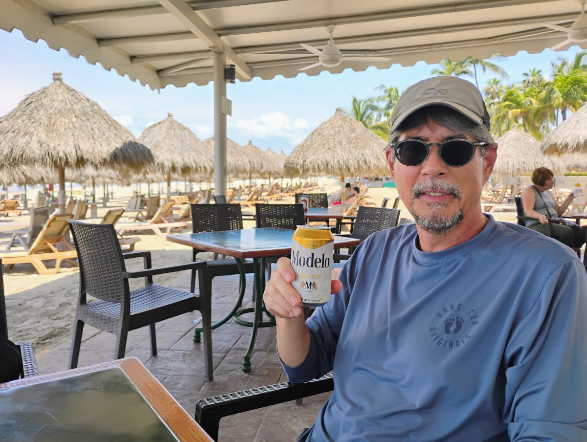
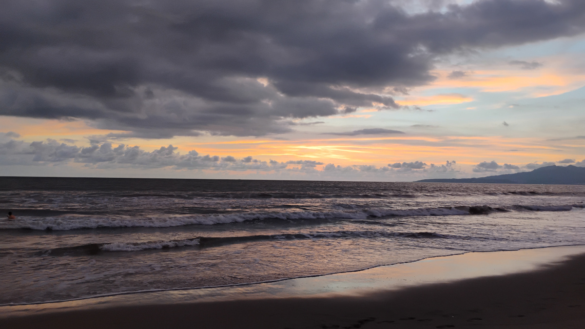

Saturday, August 24, 2024
Becky and I are spending a week in Nuevo Vallarta. Nuevo Vallarta is located 20 minutes north of Puerto Vallarta’s International Airport.
We had a noon flight to Puerto Vallarta so we didn’t have to get up too early. Traffic on the way to Van Nuys was light and we got to the Flyaways bus terminal in about 50 minutes. I dropped Becky off with her bags at the terminal and then pulled the car around to look for a parking spot in the garage. There was a sign at the gate that said “parking available on the 5th floor”, which I thought was kind of strange because I’d never seen a sign like that before. The parking garage was very full and after looking around on the ground level as well as on floor two through four, I finally made my way up to the fifth floor, which is essentially the roof of the building. So the old Honda is going to spend the week out in the sun, kind of like what I have planned for myself.
We were able to catch the 9 a.m. bus to the airport. The bus was pretty empty with maybe only 10 people on it. Traffic from Van Nuys to the airport was light and we made it to the airport in about 25 minutes. At the airport it was extremely crowded with lots of cars and it took forever for the bus to make stops at the terminals to drop people off. It took about another 30 minutes for us to make it to the Alaska terminal which is terminal six.
There were about 10 people online at the bag-check counter and the line was going really really slow. I was getting worried that we were going to run out of time because bags needed to be checked one hour before departure and we only had like an hour and a half. The line did end up moving little by little and by the time we got to the counter it was probably 20 minutes later.
We stopped by a shop in the terminal called Gameway to pick up two sodas and two small snacks. The snacks we got were a small bag of peanut M&Ms. We can get these for “free” since this is a benefit provided by Chase Sapphire Reserve. We will have these later in the week.
We had an hour until boarding time since the flight was delayed by 15 minutes. When we boarded the airplane we were offered a choice of water or champagne. We both got champagne; about three sips from a paper cup, but still kind of nice. After takeoff we ordered our drinks. Becky had a margarita and I had an Old Fashioned and the drinks were served with a cup of warmed up assorted nuts.
About a week before our flight we pre-ordered our meals. Becky’s choice was chicken, potatoes and white beans and the dessert was a chocolate chip cookie. Becky’s dinner drink was Sprite and Jack Daniels. After dinner Becky had the chocolate chip cookie with coffee and Bailey’s. I ordered a hamburger which was OK, not the best, and came with a small bag of potato chips and a chocolate chip cookie. I had a glass of red wine with my meal.
On the plane Becky watched a movie called “Anyone but you”. I watched Dune part 2. That movie is two and a half hours long and I was only able to get through 2 hours of it before we landed, so I will have to try to watch the last half hour of the movie on the return trip.
When we landed in Puerto Vallarta it was raining and our bags got a little wet. We got our bags searched at customs. Apparently they saw something on the X-ray that looked a little suspicious. So we got pulled aside and they wanted to know if we had any rice or beans. The inspector wanted to know why we had so much food with us and we told him we were staying in a condo. He wanted to know if we lived in Puerto Vallarta, and we told him we were only visiting. Then he said what are you doing with all that food? I said we’re staying in a condo with a kitchen. I bet he thought, what a couple of dumb gringos; don’t they know there are supermarkets in Mexico?
So after poking around in our suitcase for a little bit he let us go because we didn’t have any fresh meat, vegetables, medical products or anything prohibited.
At the LA airport, we saw somebody carry on to the plane a fresh bouquet of flowers. They carried them all the way to Puerto Vallarta. At customs where they inspect your bags we didn’t see the flowers anymore so I guess they had to throw them away.
At the airport at Puerto Vallarta there is a VIP arrivals lounge so we stopped in there to get some food and some drinks (a benefit of the Chase credit card). We planned to eat a bit of food since we weren’t going to cook anything that night for dinner. We shared a ham sandwich and a veggie burrito. Both were good and we had some vegetable sticks with ranch dressing. Becky had a margarita and I had a beer.
Since it was raining outside we decided to take a taxi to the resort instead of Uber. Uber is not allowed into the airport, so to call an Uber requires a short walk to get to the main road. We didn’t want to walk in the rain and get our luggage wet.
At the resort we had a short wait to check in. As we were checking in, Becky and I both started to feel really sick. At first, I felt kind of faint and started sweating. I had to ask for a glass of water and then as we were finishing up Becky started feeling really sick so she went outside to sit down.
After a few minutes I started feeling better and then Becky felt better and we collected our bags and walked to our room. A few minutes after arriving in the room the porter showed up with our three big bags. He asked if we had any questions about the room and told us where the air conditioning controls were. By then we were both feeling better and we did some unpacking and went to bed early. We think it was something we ate at the VIP arrivals lounge that made us sick. But it was strange that it came and went so quickly. Maybe the ranch dressing was bad, who knows?
Sunday, August 25, 2024
I got up early and made a cup of coffee and had a granola bar. I worked on my computer for a little bit. The resort has internet access through an open WiFi network. Since an open WiFi has lots of security risks associated with it, I activated a VPN service that I subscribe to for these occasions.
Later in the morning, around 9am, we got ready to go down to the beach. First we stopped by the concierge because we had received a note at our door and it was in Spanish and I couldn’t really understand what it was saying. I thought it had something to do with housekeeping so we brought it to the concierge to have her translate it for us. It turns out it was an invitation for our welcome drink which we probably should have gotten last night but no one said anything to us.
We met with Gladys and she explained the activities for the week and asked if we had any questions. She asked when the last time we were here, but I think she already knew we were here last October. That meant we were not eligible for the full timeshare presentation which I was personally happy not to be eligible to attend a three hour presentation. She told us that there is a welcome party tonight at 6pm in the theater, but all of the other shows for this week were canceled (because it’s the rainy season) and they would just have themed night meals in the buffet. We will probably skip the themed dinners and just have a late lunch in the buffet on the days we eat out.
Overnight they slipped a notice under our door which said that the main pool was going to be closed which kind of surprised us since we didn’t expect it to be closed until September, after we had departed. As a result the adult pool is open to everybody and it is pretty crowded in the afternoon.
Today the ocean conditions are a yellow flag. On previous visits the flags have been red or black. Yellow is caution whereas red or black is dangerous or high risk.
Today we’re at palapala #206 which is one row from the sidewalk and we just have a few short steps to the pool and going in the other direction we’re about six rows back from the beach. The temperature in the morning is 85F and the skies are clear.

The resort seems a lot less crowded this morning with only a few people on the beach. But as I mentioned earlier the pool is crowded and all the chairs in the shade are taken.
This morning there doesn’t seem to be any Beach Attendants around and everyone has to drag their own loungers and chairs to wherever they want to sit. They can even hang out in the reserve section, whereas last year we got kicked out of the reserved section.
At 11:30 we went inside to order our welcome drinks because we plan to bring those drinks to lunch with us. Becky ordered a margarita and I had a beer. Becky said her margarita was not that good. We had lunch at the beachside restaurant. Becky ordered fish tacos and I ordered pork tacos, three tacos each, which we shared. Becky liked the pork tacos better than fish tacos. Though both types were good. The total price was $368 MX pesos ($19 USD) including discounts, tax and tip.

At noon the temperature had risen to 90°F, still pleasant in the shade since there was a steady but warm breeze off the ocean. By then the sand was too hot to walk on without shoes or flip-flops. There’s a lot more people at the beach.
At 1:30 we called it quits for our beach time and headed back to the room for showers and to get ready for grocery shopping.
There’s a small market located about 10 minutes walk from the resort. We picked up supplies for making breakfast (eggs), sandwiches for lunch (bread, lunch meat and sliced cheese), bottled water, Mexican beer, corn chips etc. Groceries cost $635 MX pesos ($33 USD).
At 6 pm we went to the welcome show which consisted of a cultural dance put on by about six performers. Drinks and a small plate of food was served. We didn’t eat any of the food because we saw the plates of food sitting out in the warm weather for at least an hour before the show started. From our balcony on the 8th floor we could see the setup and preparation area. We did drink Margaritas and a rum punch. Also they passed out popcorn in the little bags. After the show there was a drawing for prizes. They raffled off dinners and spa passes. We didn’t win anything.
Monday, August 26, 2024
I woke around 5am and made some coffee and worked on my book. Later, when Becky got up, I made scrambled eggs with potatoes and diced ham.
Around 9am we went to the beach. The sky was clear, the wind was calm and there were some little flies buzzing around and pestering us. About an hour later the breeze picked up and little pests were gone. The temperature this morning was 90°F. The ocean condition flags were changed from red to yellow about one hour after we arrived.
Around 11am we decided to have our picnic lunch. Lunch was ham and cheese sandwiches, chips and crackers. Becky brought down a small container of white wine and I had a can of beer. We had to be sneaky with our food and drinks because coolers and picnic baskets are not allowed on the beach. So I keep my portable cooler in my backpack and the cooler police don’t bother us. Around 2 pm we went back to the room to take our showers.
In the afternoon it started to get cloudy over the mountains and it looked like there were some thunderstorms forming. In the evening there was a pretty good lightning show. We saw 10 or so flashes of lightning every minute or two. Most of the time we didn’t hear any thunder so the lightning was either far away or the wind was blowing in the wrong direction. We could also see rain showers in the distance. Being up on the 8th floor we had a good view of the mountains.
Dinner tonight was chicken and rice burritos that we made in our kitchen. Later we watched a movie called, The Devil’s Peak, the movie was pretty bad. Becky said it must have been one of the movies I picked out, but I actually think she picked out that movie.
Tuesday, August 27, 2024
When we arrived at the beach around 9am, a lot of the beach furniture was picked up, something the staff must do every evening. So this morning we had to drag loungers and chairs to the palapala where we wanted to sit. It took Becky a while to choose one she liked and we ended up moving once. It’s kind of hard to pick one when you have like 500 to choose from.
The skies this morning were mostly clear with a few high wispy clouds. This morning’s temperature is 85° F. No breese and no bugs.
This morning the red flags are out. About an hour after we got to the beach the flags were changed to yellow. So maybe they just always put the red flags out overnight and then change them to whatever they need to be around 10am.
On our first beach walk of the day, Becky stepped on a bee. The bee stung her on the bottom of her foot near her big toe. I had to pull the stinger out. When we got back to our palapala, I consulted Nurse Google, who recommended putting ice on the area to reduce the swelling, assuming she wasn’t having an allergic reaction. On the positive side we did find seven pesos while on our walk. We also saw a couple other bees, so I’m not sure what they’re doing down on the beach.
One thing about sitting on the beach is we always get asked every 5 minutes if you want to buy something by the beach vendors. They’re always dressed in white and they sell hats, sunglasses, blankets, dresses, wood carvings, cigars, real silver jewelry, t-shirts with funny sayings like Jose Deere with a picture of a donkey instead of a tractor. Twenty minutes later the same guy comes around with the same stuff asking us if we want to buy anything.
One thing about having the main pool closed is they moved all of the activities to the adult pool. The staff set up the PA system at the quiet pool and they play music, make stupid announcements and run all sorts of activities. The announcements are given twice, once in Spanish and again in English. The music is old tunes from the ’80s, Latin pop music, some disco and techno dance music. The music would be okay except the volume is way too loud, you can’t even talk to anybody while in the pool.
Lunch was ham and cheese sandwiches and tortilla chips. Dinner tonight was tuna, mac and cheese and green beans.
Later we watched a movie and made popcorn. I brought a HDMI cable to connect my laptop to the TV. The movie was a comedy streamed from Amazon Prime.
At 7pm we walked back to the beach to watch the sun set. After dark we sat on our balcony and watched the lightning from the thunder storms that built up in the afternoon.
Wednesday, August 28, 2024
Breakfast today was scrambled eggs, diced potatoes, diced ham with a little bit of leftover rice, which we made into burritos.
This morning we started our vitamin D/sunshine therapy around 9:20am. The beach attendant was roaming around and he set up the chairs at our favorite palapala, number 206. Yesterday we were at number 306 about 10 ft away. Number 206 is nice because in addition to the palapala there are some tall palm trees which also provide shade in the morning.
This morning the skies are mostly clear with a few scattered high clouds. The temperature this morning is 85°. Later today there is a 40% chance of rain.
Becky’s big toe where the bee stung her swelled up last night. This morning she is feeling better but her toe is still a little swollen. According to Nurse Google the swelling can last up to one week.
On our first walk down the beach today we saw more bees just crawling around on the sand by the water’s edge. I’m not sure what they were doing down there; sometimes the waves come up and wash them away. On our walk we took some pictures of the resort adjacent to us called the Occidental. Then I walked as far as the Hard Rock Resort. On the way back I found 10 pesos. I’m not sure why there are Mexican pesos just lying in the sand. So far we found 17 pesos, about $1 USD.
We finished up at the beach around 2:15 and went back to the room for showers. The plan is to stop by the main lobby to check on our room charges and go to the bank to get some pesos for the taxi ride back to the airport on Saturday.
Our room charges were correct. We then walked to the Mall, about 10 minutes away. We were surprised to see they had a nice big laundromat and food court with McDonald’s, Subway and 5 or 6 other restaurants. Next door to the mall was a Citibanamex Bank with three ATMs. So I withdrew 500 pesos ($23 USD). The taxi to the airport for 1 to 4 passengers is 240 pesos ($12.22 USD).
The movie tonight was “I am Celin Dion”, a documentary about her health problems.

Thursday, August 29, 2024
This morning when we woke up it was mostly cloudy; but by 9am most of the clouds had burned off. The weather forecast for today: 88°F, humidity 58%, Scattered thunderstorms. Chance of rain 50%. Last night at about 1 am there was a big thunderstorm with rain.
Breakfast was coffee and granola for me and Becky had oatmeal. We did not pack lunch since the plan is to have lunch at the resort’s buffet.
Today we are at palapala #403. The palapalas are laid out in a 8 by 45 grid with some missing areas for the restaurants, towel shack and volleyball court. So there are around 300 palapalas to choose from.
I went swimming in the ocean today and the water is very warm. The ocean water is even warmer than the pool and I think the pool is too warm. I wish the pool was just a smidge cooler because it’s not really that refreshing.
Thunderstorms forming over the mountains. Typical weather pattern for this time of the year is afternoon thunderstorms and here’s an example of a big thunder head over the mountains.
We finished up our vitamin sunshine therapy around 1:30 p.m. and came inside to take our showers and get ready to have lunch either at the resort’s buffet or at a restaurant in the mall. When we went back to our room, it had not been made up for the day as it had been on other days.
Our plans for lunch were a bust. The resort is not running their lunch buffet today and I was really looking forward to having at least five plates of food and dessert. After looking at the reviews for the restaurants in the nearby mall, we decided to have lunch at the beach restaurant where we had tacos earlier in the week. Lunch was 768 pesos including tax and tip ($39 USD).
Becky ordered the fish tacos and I ordered the tacos El pastor (pork). Becky had a slushy drink called a Rocky and I had a Mexican beer, and we shared a plate of onion rings for starters.
The Rocky is made from rum, vodka, mango, grenadine, lime juice and simple syrup.
The movie tonight was Invisible Man streamed from Amazon Prime.
At 7pm we walked down to the beach to watch the sun set. It was lightly raining and we saw a rainbow.
Friday, August 30, 2024
Breakfast this morning was scrambled eggs with leftover rice, potatoes and some refried black beans made into burritos.
Today’s forecast: 88°F, humidity 58%, Scattered thunderstorms. Chance of rain 50%.
This morning we are back at palapala #403. The skies are mostly clear with a few high clouds and some thunderheads in the distance.
Around 10:20 am we went to swim in the pool. We were talking to a guest who is from Riverside when we saw the pool concierge walk around the pool asking people in the pool who’s towels are these? Then he held up a boogie board that was left on one of the loungers and asked if this belonged to anybody. He was picking up items that people had left on chairs and loungers in order to reserve them.
Then we saw a guy from his third or fourth floor balcony yelling at the pool guy in Spanish, but the pool concierge didn’t hear him. A few minutes later he came running down and then he and the pool concierge got in an argument in Spanish. I really couldn’t understand what was being said, but the man took his boogie board and towel back to “his” umbrella and threw them down on “his” lounge chair. As he was walking back to his room and pool concierge was finishing his walk around the pool, they met up again and they had another real long conversation also in Spanish. Maybe the gist of it was, “hey, you know everyone else is reserving chairs, why are you picking on me?” Then the guy goes back inside.
We had fun discussing all the drama with some of the other guests in the pool. None of us spoke Spanish well enough or could hear what was said, so we were just imagining and making up stuff about how the conversation was going. Anyway, the pool concierge walked off with two or three towels that he had collected from chairs that people were trying to reserve.
We had ham and cheese sandwiches for lunch with chips. I had a beer. Becky had a canned cocktail that we had bought from WinCo. She also had a half a glass of white wine.
Later in the afternoon, we were entertained by about 20 birds who were helping themselves to a plate of french fries left at one of the palapalas when the guests went to swim in the ocean. The feeding frenzy ended when one of the waiters picked up the plate of mostly pecked over fries and took it away.
Before dinner we stopped by the front desk to check on our room charges, since we will be leaving tomorrow, we don’t want any surprises. Dinner tonight was tuna noodle casserole and other leftovers.
Around 7pm we went out to watch the sunset. There was a lot of thunder and lightning and a little bit of rain in the area. The lifeguard made everyone get out of the ocean because of the nearby lighting. The flashes were very bright and I was keeping an eye out to see if I thought they were close, but the lighting was cloud to cloud from what I could see.
We noticed down the beach, off in the distance, that something kind of big had washed up. So we walked down to have a look, especially since some of the hotel staff were also down there. It turned out to be a large dead turtle. The lifeguard went to get a wheelbarrow and took the turtle away.
The movie tonight was Match Point. I gave up on it after about 30 minutes. Becky watched a bit more until it was time to watch the sunset. She will watch the rest of it at home.
We started packing and organizing our stuff for the trip home. Tomorrow we have an 11am checkout and a 3:35pm boarding time.
The sunset was somewhat obscured by a rain squall off in the distance.
We have been staying in a one bedroom, two bath unit with a kitchen. This was a timeshare exchange.

Saturday, August 31, 2024
Breakfast was scrambled egg burritos with refried beans and leftover rice. Since I was up early, I had two cups of coffee, some stale cookies and a granola bar.
After breakfast I washed the dishes, did some final packing and tidying up. By 10:15am all our suitcases were packed and we’re just waiting in our room. I checked the Uber app and the price to the airport this morning is 230 pesos. The posted rate for a taxi is 250 pesos (a one US dollar difference). Taking the Uber requires schlepping our bags and a 5 minute walk to exit the resort (Uber is not allowed on to the resort for pickups).
When we were in the lobby of our building the bellboy approached us to take our bags. I was walking over Becky’s bag to the main building, because I was making two trips. He said they don’t allow a lot of luggage in the lobby, so I said okay and that I need to get the rest of our bags. So back up the elevator I went to get the remainder of our bags.
At checkout, our wrist bands were cut off, we signed our bill and received two tags required to exit the resort. One tag to give to the bellboy that allowed us to retrieve our bags and the other tag for the guard shack. We waited in the lobby about 40 minutes before leaving the resort. Our resort charges were 1,137 pesos ($57 USD). I’ll have to check my credit card in a few days because when we checked in, a 10,000 peso ($500 USD) hold was applied to my card.
We left the resort about 11:55 am and arrived at the airport about 20 minutes later. We had a 40 minute wait for the Alaska counter to open. We were 1st in line.
After checking our bags, we headed through security where we had to scan our boarding passes before our carry-ons were x-rayed.
At the airport there are two VIP lounges that we can access with the Chase Sapphire Credit Card. The first one was full, so we were offered a golf cart ride to the second, larger lounge. Getting a ride on the golf cart was kind of fun, but it seemed kind of slow, since we could only go as fast as people were walking through the narrow passageways.
We stayed at the VIP lounge for about one and a half hours. I had a beer and Becky had a Mai Tai. The food was a combination of mini burritos, chicken noodle soup and chicken chow mein. Later Becky had an espresso Martini, which she didn’t like, so I drank some of it and it wasn’t too bad.
Our meals on the flight home were chicken and rice for me; Becky had the shrimp pasta. I finished my movie (Dune part 2). Afterwards I listen to some music and read my book.
We arrived at the LAX baggage carousel at around 6:30pm. After about 15 bags came down the belt, it got jammed. One and a half hours later, it was fixed and we got our final bag. At 8:30pm we were on the bus to Van Nuys. The Traffic from Van Nuys to Ventura was light and we arrived home at 10:30 pm.
Our stay at the resort was very relaxing. This was the 3rd time we have stayed at this resort and I would come back here again. The staff at the resort is very attentive and friendly. About half of the guests are Mexican Nationals. Last time, there were a lot of Canadians here, this time most of the English speakers were American.
Our next trip is in 22 days, a cruise on Oceania Riviera, round trip, departing San Pedro to San Francisco for seven days.